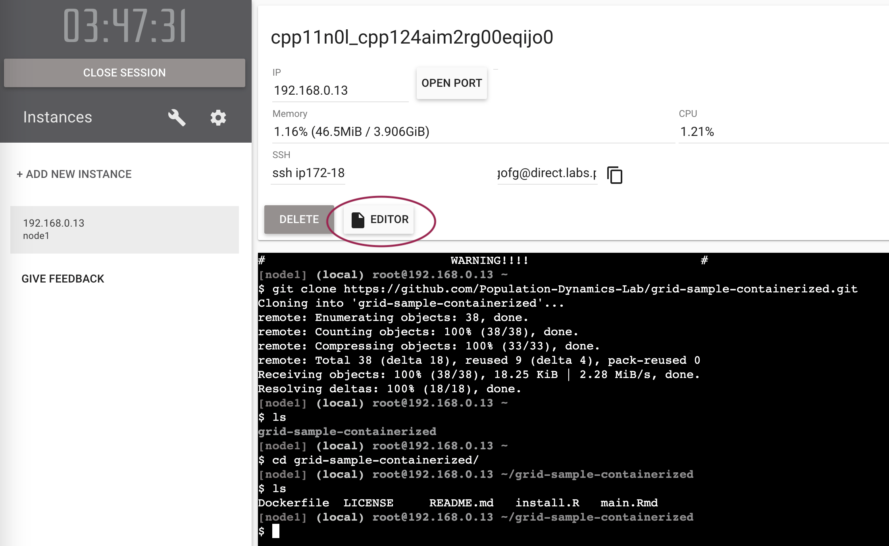

2. Build a Docker container image
First, make sure you got familiar with how Docker containers work.
This task can be done on your own computer or on a cloud-based Play with Docker environment. Specifically, for this tutorial we will use the Play with Docker Labs Environment, however you are free to follow along on your own computer, if you have Docker, OrbStack, or other Docker-compatible software installed. Using the Play with Docker Labs Environment is free and does not require any installation, only a web browser and a Docker Hub account.
The Goal
Build your own Docker container image for your hypothetical project. Imagine, that for this project you need 1 or 2 R packages that were archived from CRAN and are not available in the Rocker container image.
To achieve this goal, find a few archived R packages on CRAN. A few notable examples are rgdal, MortalitySmooth and many others. Remember, “40% of all packages ever in CRAN got at one point archived”[^1]. CRAN does not have it’s own section with archived packages, so you might want to look at CRANhaven Dashboard where you can find recently archived packages.
Choose the Rocker Image version
Depending on which archived package you selected, you must first find out which Rocker image version to use. For example, the package MortalitySmooth was archived on 2020-12-10. If you would use Rocker RStudio container image with R v4.1.0 released on 18th May 2021, the R package installer in the container will think it is 18th May 2021 and will try to install the package from the CRAN snapshot from that date. Since MortalitySmooth was archived after that date, you will not be able to install it using the standard install.packages() function. You will have to use remotes::install_version() function from the remotes package. Use internet search to find the release dates of R versions released just before the date the R package was archived. Rocker images are configured to use CRAN snapshot on the date of the R version release.
So your options are:
Use more recent R version (and consequently Rocker image) and try to installing
MortalitySmoothusingremotes::install_version()function.Use strictly the R version that was released just before the package was archived and try to install the package using
install.packages()function.
Start the Play with Docker Environment
Go to https://labs.play-with-docker.com/ and log in with your Docker Hub account.
If it is the first time you are logging in, Play With Docker will request access to your Docker account. Click on the “Accept” button to proceed. Than click the large green “Start” button to start the environment.
Click on the “Add New Instance” button to start a new Docker container instance.
You should get a new terminal window with a prompt that looks like this:
Clone the Repository
Go to the minimal example repository and copy the URL as shown below:
Now clone the repository by pasting the following command into the terminal:
git clone https://github.com/Population-Dynamics-Lab/grid-sample-containerized.gitCheck which folders you have in the current directory:
lsYou should see the grid-sample-containerized folder. Change the directory to the repository (you can type cd g and press Tab to autocomplete the folder name):
cd grid-sample-containerizedYou can check the contents of the repository by listing the files in the directory using in terminal again:
ls -alEdit the Dockerfile
Now that you have selected the Rocker image version, you can edit the Dockerfile in the repository. The Dockerfile is a text file that contains instructions for building a Docker container image. Unlike in tutorial 1, In this tutorial, ignore the install.R file, we will be installing packages right in the Dockerfile.
Find the editor button in the middle of the screen and click on it.

A very simple file browser and editor (displayed when you click a file) will appear. You can edit the files in the repository directly in the browser. Remember to save changes.
To install the MortalitySmooth package in the Dockerfile add this in the second line:
RUN install2.r --error --skipinstalled MortalitySmoothSo your final Dockerfile should look like this:
FROM rocker/rstudio:4.0.0
RUN install2.r --error --skipinstalled MortalitySmoothIf you were installing two packages, you would add them like this:
FROM rocker/rstudio:4.0.0
RUN install2.r --error --skipinstalled MortalitySmooth ggplot2Remember to save the changes.
Build the Docker Container Image
Unlike in tutorial 1, you will not be using Binder web service to build the Docker container image automatically for you. Instead, you will use the docker command. The docker command is a command-line tool that allows you to interact with Docker containers and images. You can use the docker command to build a Docker image from the Dockerfile in the repository.
First make sure you are in a folder that has the Dockerfile in it. You can check the contents of the current directory by running:
ls -alAnd you can quickly check what is in the Dockerfile by running:
cat DockerfileTo build the Docker image, run the following command in the terminal:
docker build -t r-mort-smooth:4.0.0 .Let us break down this command:
| part of command | what it does |
|---|---|
docker build |
This is the base command used to build a Docker image from a Dockerfile. |
-t r-mort-smooth:4.0.0 |
The -t flag stands for “tag”. r-mort-smooth:4.0.0 is the name and tag given to the image. r-mort-smooth is the name of the image. 4.0.0 is the tag, which often represents the version of the image. You can choose any name and version here can also be anything, but we use the same version we used in the Dockerfile just so that we know which R version is going to be inside the container. |
. |
this very important . (dot) specifies the build context, which is the current directory. Docker will look for a Dockerfile in this directory to create the image. |
The container image will take about 3-6 minutes to build.
When the build is finished, you can check that it was added to the local container image storage:
docker imagesRun the Docker Container from your Image
Now you have a Docker container image with the MortalitySmooth package installed. To run it, you can use the docker run command in the following way:
docker run --rm -p 8787:8787 -v $(pwd):/home/rstudio/my-project -e PASSWORD=somepass r-mort-smooth:4.0.0Let us break down this command:
| part of command | what it does |
|---|---|
docker run |
This is the base command used to run a Docker container from local or remote container image storage. |
--rm |
This makes the container temporary. It will be destroyed after you stop it. You can explore other options (e.g. how to name containers, make them persistent and re-run the same ones after stopping) in the Docker documentation. But for now we want a disposable container that is destroyed after stopping. |
-p 8787:8787 |
This flag specifies that the port inside the container is mapped to your computer, so that you can access RStudio in a web browser. Briefly, RStudio in a container is actually a server software that works over a network and it is not exactly the same as RStudio on your laptop, even though it feels that way. This is why ports are necessary, but do not worry about it too much at the moment. |
-v $(pwd):/home/rstudio/my-project |
This maps the current directory (designated by $(pwd)) from which you are running the command to a folder inside the container (/home/rstudio/my-project). Thanks to this, when you use the containerized RStudio, you will have access to your local folder and will be able to run scripts and edit them. The /home/rstudio/ is default for Rocker containers, and the my-project part can be replaced with anything. Instead of the current directory (designated by $(pwd)) you can provide /path/to/any/folder/on/your/computer. |
-e PASSWORD=somepass |
Sets the password. Better use a good password, even though you are running locally. |
r-mort-smooth:4.0.0 |
The final part is the name and tag that you assigned earlier when you were creating the container image. |
The container starts almost instantly. In case with Play with Docker service, you will see a button with a port pop-up:
Click on the port number to open RStudio in a new tab. Use the default login rstudio and the password you set in the docker run command.
You can now use RStudio in the browser to check if the MortalitySmooth package is installed by running:
library(MortalitySmooth)Stop the container
To stop the container, click the “power” button in the top right corner of the RStudio window. Close the web browser tab with RStudio. In the Play with Docker browser tab, click in the terminal and press Ctrl+C or Ctrl+\ to stop the container.
Video reference
For reference, here is the whole process in a sped up sequence:
And her is a video in a more leisurely pace, where only the building of the Dockerfile is sped up, but you can watch and rewind to any steps:
Discussion
Now that you have created your own reproducible repository, think for a moment, how future proof is it really? What does the reproducibility of your repository depend on? How can you further future-proof it?